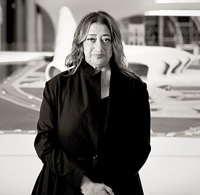

Дама Заха Мохаммад Хадид (31 октября 1950, Багдад — 31 марта 2016, Майами, Флорида) — ирако-британский архитектор и дизайнер, представительница деконструктивизма. Дама-командор ордена Британской империи (2012), иностранный член Американского философского общества (2013).
Как архитектор Хадид всегда пыталась разрушить общепринятые каноны и «растянуть» рамки привычного пространства, придав ему мощный динамический импульс. С этой же целью — усиления внутреннего движения и деформации — Заха Хадид использует искажённую перспективу, выявляющую острые углы и кривые линии. В своих интервью она неоднократно говорила о том, что её творческий метод сложился под влиянием русского конструктивизма.
Кроме чисто архитектурной работы с крупными формами, Заха Хадид охотно экспериментировала в жанре инсталляции, а также создавала театральные декорации, выставочные и сценические пространства, интерьеры, обувь, картины и рисунки. Она оттачивала новые формы в условиях полной композиционной свободы или, напротив, в условиях жёстких задач. Её малые работы есть во многих музейных коллекциях, таких как MoMA, Немецкий музей архитектуры во Франкфурте-на-Майне (DAM) и др. Также она читала лекции и устраивала мастер-классы по всему миру, каждый раз собирая полные аудитории.
Заха — автор нескольких экспериментальных коллекций мебели. Её наиболее известные работы в области мебельного дизайна — светильник «Chandelier Vortexx» и кресло «Cristal», выполненные для Sawaya & Moroni. В 2005 году её выбрали дизайнером года в рамках первой выставки дизайна Design Miami.
В 2016 году она скончалась от пердечного сриступа, пока проходила лечение от бронхита.